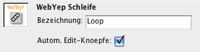

Schleife


Die Symbole für das Schleifen-Element in der Objektpalette:
Links "Schleifen-Start", rechts "Schleifen-Ende"
Einen Block von Elementen auf einer Seite beliebieg oft zu wiederholen ist der Sinn der WebYep-Schleife. Die wiederholten Elemente können dabei WebYep-Elemente (Kurztext-Element, Bild-Element, ...), aber auch herkömmliche HTML-Elemente (Texte, Absätze, Bilder, Tabellen, ...) sein. Alles was sich zwischen dem Schleifen-Start- und dem Schleifen-End-Element befindet, bildet einen Block, der einfach nach Wunsch wiederholt wird. Das Entscheidende aber ist: WebYep-Elemente innerhalb des sich wiederholenden Blocks können bei jeder Wiederholung andere Inhalte haben!
Das Schleifen-Start-Element wird durch folgenden PHP Code repräsentiert:
<?php foreach (WYLoopElement::aLoopIDs("Schleifenname") as $webyep_oCurrentLoop->iLoopID) { $webyep_oCurrentLoop->loopStart(true); ?> Details...
(siehe auch "Eigenschaften des Schleifen-Elementes" weiter unten)
- "Schleifenname": Ein Text – der Name für dieses Element.
(siehe auch "Eigenschaften des Schleifen-Elementes" weiter unten)
- true/false: Ein boolscher Wert – gibt an, ob die Schleifen-Editier-Knöpfe automatisch eingebunden werden sollen.
true wenn die Editier-Knöpfe automatisch am Beginn jedes Blocks eingefügt werden sollen.
false wenn nicht. Sie müssen dann den PHP-Code für diese Editier-Knöpfe manuell an der gewünschten Stelle einfügen – siehe dazu auch "Autom. Edit-Knöpfe" weiter unten.
Das Schleifen-Ende-Element wird durch folgenden PHP Code repräsentiert:
<?php $webyep_oCurrentLoop->loopEnd(); } ?>
Einsatz des Schleifen-Elementes
Um das Schleifen-Element anzuwenden, erzeugen Sie in Ihrer Seite einfach einige HTML- und/oder WebYep-Elemente (den Schleifen-Inhalt). Setzen Sie dann den Schleifen-Start vor diese Elemente und das Schleifen-Ende nach diese Elemente:

In der Website präsentiert sich die Schleife dann für die BetrachterInnen so als würde sich der Schleifen-Block einfach mehrmals wiederholen, jedes mal mit anderen Inhalten allerdings:

Im "Bearbeiten"-Modus im Webbrowser werden oberhalb jedes Blocks bis zu vier Symbole eingeblendet, mit denen die Blöcke verändert werden können:

Wobei die einzelnen Symbole folgende Funktion haben:
Neuen Block darunter hinzufügen. |
|
Block löschen |
|
Block Richtung Anfang verschieben |
|
Block Richtung Ende verschieben |
|
|
|
Block ein-/ausblenden |
Positionierung von Schleifen-Start und -Ende
Wenn Sie ein HTML-Element (wie einen Absatz "<p>" oder eine Tabelle "<table>") wiederholen wollen, müssen Sie nur darauf achten, dass Sie den Start exakt vor das Element und das Ende exakt nach das Element setzen - siehe dazu "Positionierung im Dokument" in der Einleitung zu den Tutorials.
In manchen Fällen kann es nötig sein, den Schleifen-Start und das Schleifen-Ende im HTML-Code genauer zu platzieren um exakt festzulegen, was wiederholt werden soll. Sie können die PHP-Blöcke für den Schleifen-Start und das -Ende (jeweils durch "<?php" und "?>" eingegrenzt) im HTML-Code beliebig verschieben.
Zur Überprüfung können Sie Ihre Seite im Webbrowser aufrufen und im Webbrowser den HTML-Quellcode anzeigen lassen - dort sehen Sie eindeutig, welcher HTML-Code durch das Schleifen-Element aufgrund Ihrer Positionierung erstellt wird.
Eigenschaften des Schleifen-Start-Elementes

Das Eigenschaftsfenster für das Schleifen-Start-Element
Bezeichnung
Eine Bezeichnung für das Schleifen-Element. Wird nicht in der Seite angezeigt, ist aber für die interne Untscheidung erforderlich, wenn mehrere Schleifen auf einer Seite platziert werden.
Bitte immer einen eindeutigen Namen angeben!
Autom. Edit-Knöpfe
Die Symbole zum Bearbeiten der Blöcke werden im "Bearbeiten"-Modus überhalb des jeweiligen Blocks nur eingeblendet, wenn dieses Häkchen gesetzt ist (standard).
Wenn Sie in speziellen Fällen den Schleifen-Start an eine Stelle des HTML-Codes setzen wollen, an dem die Symbole (aus HTML-syntaktischen Gründen) nicht eingefügt werden dürfen, sollten Sie dieses Häkchen ausschalten. Sie müssen dann aber an geeigneter Stelle innerhalb des Blocks folgenden Code in den HTML-Code einfügen:
<?php $webyep_oCurrentLoop->showEditButtons(); ?>
Ein typisches Beispiel hierfür wäre, wenn Sie den Schleifen-Start zwischen <table>-Tag und <tr>-Tag setzen, um nur die Tabellenzeilen und nicht die ganze Tabelle zu wiederholen. Das Schleifen-Ende müsste in diesem Fall zwischen </tr>-Tag und </table>-Tag gesetzt werden. Innerhalb einer der Tabellenzellen müsste dann obiges Code-Fragment platziert werden.
Eigenschaften des Schleifen-Ende-Elementes
Das Schleifen-Ende-Element hat keine einstellbaren Eigenschaften.